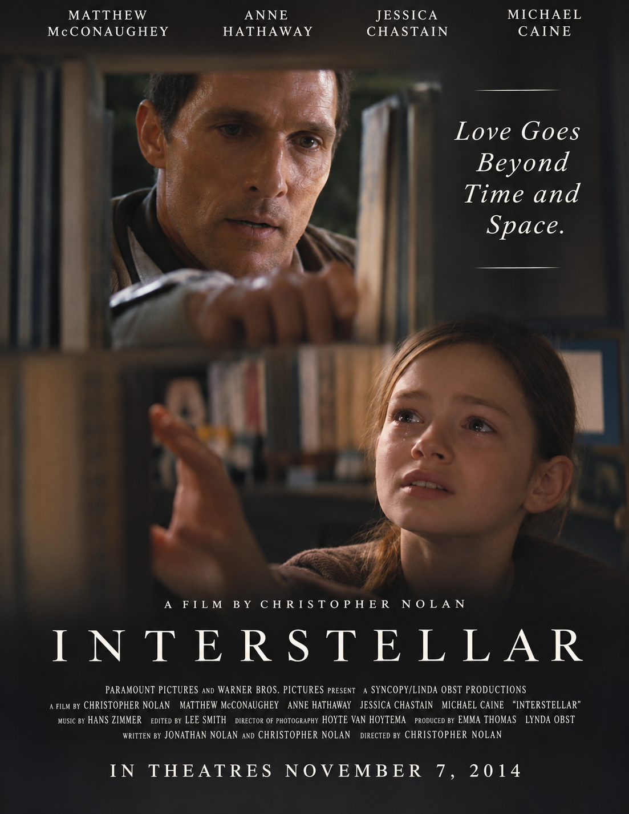

My Movie Poster
I chose the movie Interstellar. My poster focuses on Cooper and his daughter, Murph.

Target Audience
My poster is for adults aged 30 to 55. It is made for people who enjoy family stories and emotional movies.
My Design
I used dark colours and white text. The bookshelf separates Cooper and Murph. This shows the distance between them.
My tagline is "Love Goes Beyond Time and Space." It shows that family love is very powerful.
Why I Chose This Design
I wanted people to focus on the relationship between the father and daughter. The poster shows love, hope, and family.